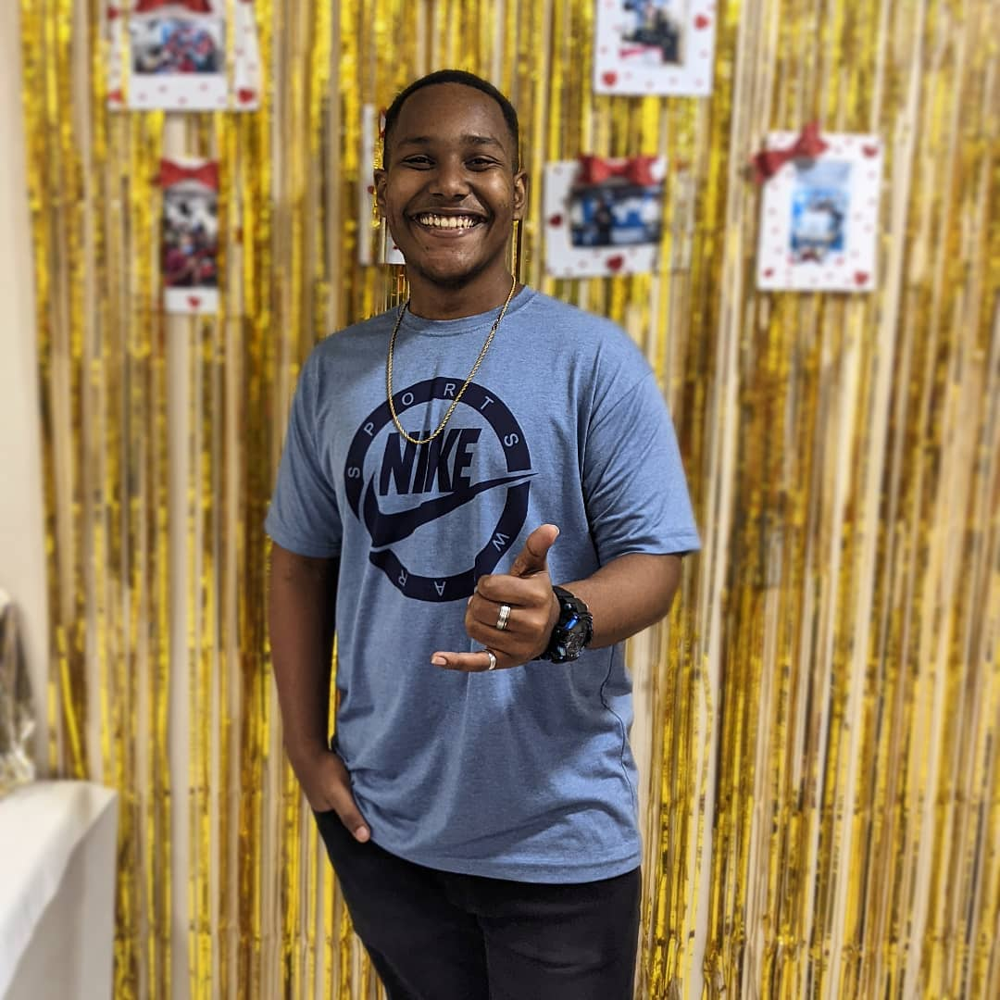

Sobre Mim
Eu sou o Gabriel, estudante de Análise e Desenvolvimento de Sistemas e alguém que sempre buscou aprender, evoluir e dar o seu melhor.
Minha caminhada até aqui não começou somente na tecnologia. Como filho mais velho, desde cedo aprendi a ter responsabilidade e a correr atrás das coisas. Sempre tive vontade de poder ajudar minha mãe em casa e também estar presente para o meu irmão. Quando posso, ajudo minha mãe com os produtos que ela vende, seja divulgando, organizando ou fazendo o que estiver ao meu alcance.
Ao mesmo tempo, fui construindo minha trajetória profissional e descobrindo meu interesse pela tecnologia. Hoje estou no terceiro período de ADS e venho estudando programação, criando projetos e tentando transformar aquilo que aprendo em algo prático.
Ainda estou buscando minha primeira oportunidade na área de tecnologia, e sei que esse processo nem sempre é fácil. Já passei por momentos de desânimo e por situações em que achei que não estava evoluindo como gostaria. Mas, olhando para minha trajetória, percebo que sempre continuei tentando.
É justamente isso que quero levar para minha carreira: vontade de aprender, responsabilidade e disposição para enfrentar desafios. Quero conquistar meu espaço na área de tecnologia, adquirir experiência e, com o tempo, poder olhar para trás e ver o quanto evoluí.
Mais do que mostrar apenas o que eu sei fazer, quero que este portfólio mostre quem eu sou, de onde vim e onde quero chegar.
Formação & Cursos
- Administração — FAETEC *(Cursando)*
- Logística — Estácio *(Cursando)*
- Informática — Micro Rio *(Cursando)*